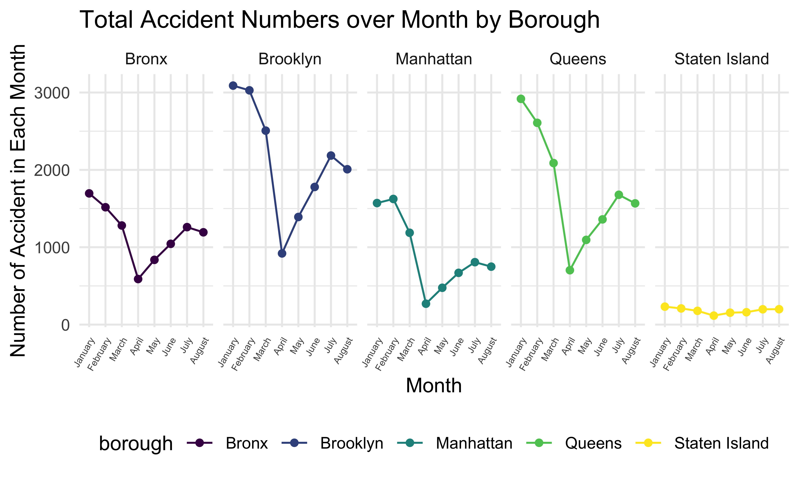
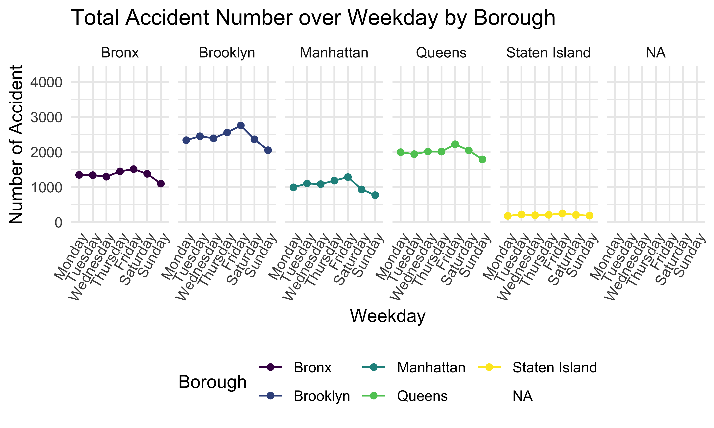
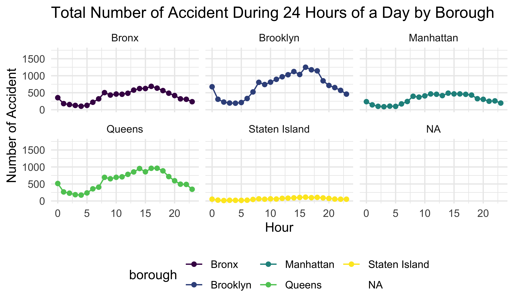
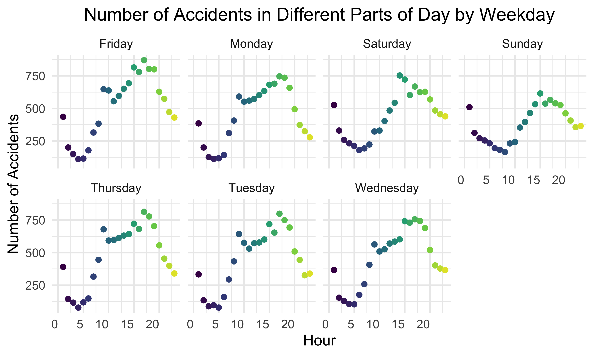

In this section, we will explore the trend of car accidents over time. We will analyze the pattern of number of car accidents followed through hour, day, and month in five boroughs.
accidents1 %>%
filter(!is.na(borough)) %>%
separate(crash_date, into = c('year', 'month', 'day'), sep = "-") %>%
mutate(
year = as.numeric(year),
month = as.numeric(month),
day = as.numeric(day)
) %>%
mutate(month = month.name[month],
month = fct_relevel(month, c("January", "February", "March", "April",
"May", "June", "July", "August"))) %>%
relocate(month) %>%
group_by(borough, month) %>%
dplyr::summarize(n_obs = n()) %>%
ggplot(aes(x = month, y = n_obs, group = 1, color = borough)) +
geom_point() +
geom_line() +
labs(
title = "Total Accident Numbers over Month by Borough",
x = "Month",
y = "Number of Accident in Each Month"
) +
theme(axis.text.x = element_text(angle = 60, hjust = 1, size = 5) ) +
facet_wrap(~ borough, nrow = 1)
This graph shows the total number of accidents in 5 boroughs from January to August in 2020. We can see that in January, February, and March, the accident numbers in these boroughs are much higher than in other months, and the accident numbers in April are the lowest for 5 boroughs. Also, Brooklyn has the largest accident number and Staten Island has the smallest accident number among all boroughs in every month in New York.
accidents1 %>%
filter(!is.na(borough)) %>%
mutate(crash_date = as.Date(crash_date),
weekday = weekdays(crash_date)) %>%
mutate(weekday = as.factor(weekday),
weekday = fct_relevel(weekday, "Monday", "Tuesday", "Wednesday", "Thursday",
"Friday", "Saturday", "Sunday")) %>%
relocate(weekday) %>%
group_by(borough, weekday) %>%
dplyr::summarize(n_obs = n()) %>%
ggplot(aes(x = weekday, y = n_obs, group = 1, color = borough)) +
geom_point() +
geom_line() +
theme(axis.text.x = element_text(angle = 60, hjust = 1) ) +
facet_wrap(~ borough, nrow = 1) +
labs(
title = "Total Accident Number over Weekday by Borough",
x = "Weekday",
y = "Number of Accident",
color = "Borough"
)
Next, this plot shows the total accident number over weekday by borough. We can tell that 5 boroughs have a similar trend, and the accident number is the highest on Friday and lowest on Sunday. Brooklyn has the highest daily accident number and Staten Island has the lowest in 5 boroughs.
accidents1 %>%
filter(!is.na(borough)) %>%
separate(crash_time, into = c('hour', 'minute', 'second'), sep = ":") %>%
mutate(hour = as.numeric(hour)) %>%
group_by(borough, hour) %>%
dplyr::summarize(n_obs = n()) %>%
ggplot(aes(x = hour, y = n_obs, color = borough)) +
geom_point() +
geom_line() +
labs(
title = "Total Number of Accident During 24 Hours of a Day by Borough",
x = "Hour",
y = "Number of Accident"
) +
facet_wrap(~ borough, nrow = 2)
This plot shows the total accident number during 24 hours of a day by borough. We can see that 5 boroughs have a similar daily trend. The number of accidents is relatively low from 12:00 am to 6:00 am, then increases and keeps high from 8:00 am to 5:00 pm, and drops until 12:00 am.
accidents1 %>%
group_by(hour, weekday) %>%
count(hour) %>%
mutate(weekday = as.factor(weekday),
weekday = fct_relevel(weekday, "Mon", "Tue", "Wed", "Thu", "Fri", "Sat", "Sun" ),
hour = as.numeric(hour)) %>%
ggplot(aes(x = hour, y = n, group = 1, color = hour)) +
geom_point() +
theme(axis.text.x = element_text(hjust = 1),
legend.position = "none",
plot.title = element_text(hjust = 0.5)) +
labs(
title = "Number of Accidents in Different Parts of Day by Weekday",
x = "Hour",
y = "Number of Accidents") +
scale_x_continuous(limits = c(0, 23)) +
facet_wrap(~ weekday, nrow = 2) 
By stratifying the number of car accidents by weekdays and hours, we found out the number of car accidents tends to increase and then decrease during the day. The number of accidents reached the peak from 1:00 pm to 7:00 pm. During the week, the number of accidents is higher on weekdays than on weekends, and the maximum number of accidents is higher on weekdays. The reason for this phenomenon might be that people are more likely to be involved in accidents on weekdays between 1:00 pm and 7:00 pm, when they are commuting in rush hours. On weekends, people will spend more time at home, so the number of car accidents is relatively lower.